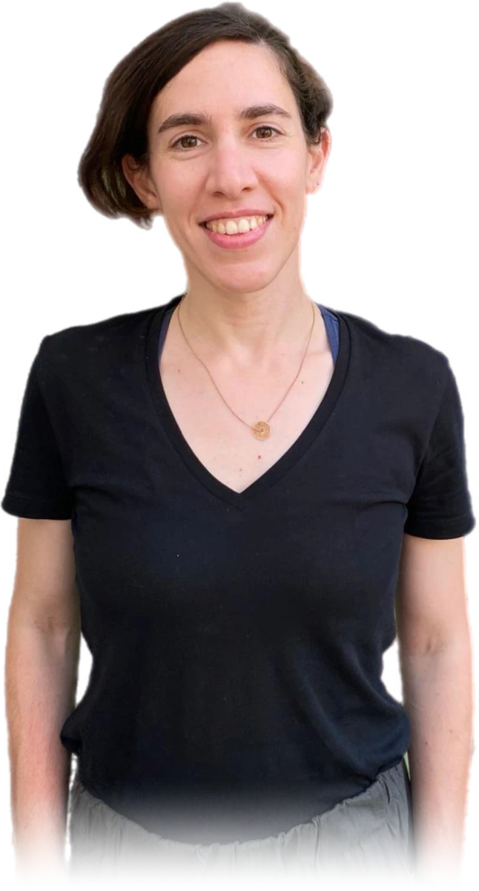
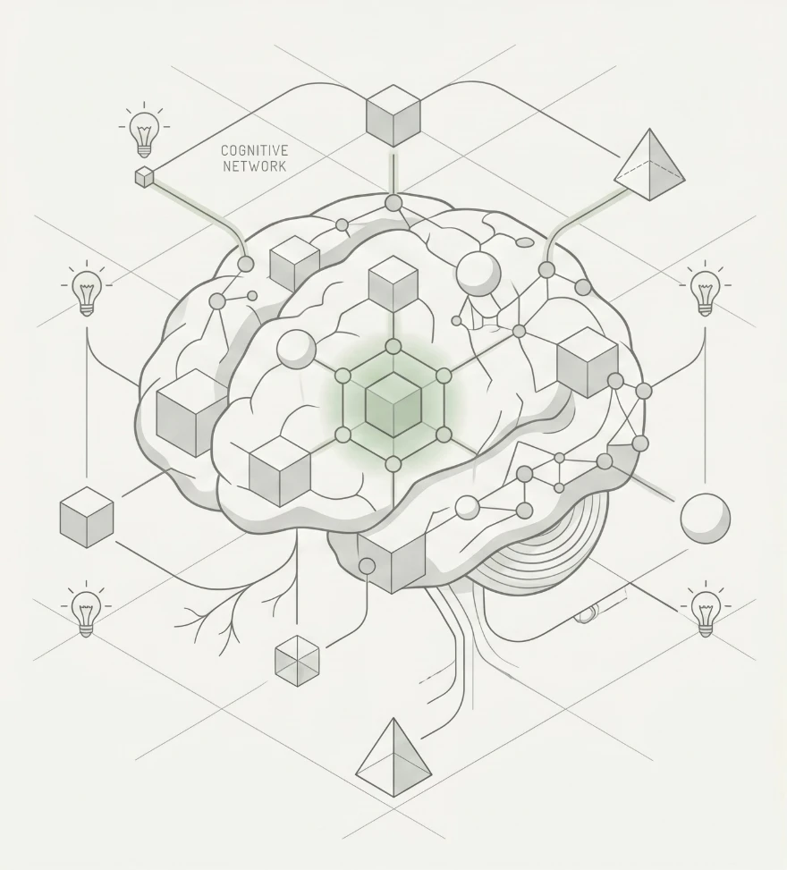

Inpatient paediatrics and NICU
Ward and neonatal intensive care, including extremely premature and critically ill neonates.

Roni Arbel, MD/PhD
I am a doctor and neuroscientist. I completed my paediatric training at Hadassah Medical Center in Jerusalem, working across general paediatric wards, outpatient clinics, and the NICU. My research focuses on cortical plasticity in sensory-deprived individuals through dedicated training, rehabilitation methods, and neuroimaging. I am looking to expand my clinical skills in community and developmental paediatrics, and in complex care.
Poster Presenting at ASDP 2026, Melbourne · 20–22 August →I have experience in inpatient paediatrics and the NICU, including care of children with metabolic, genetic, and complex medical conditions.
My PhD research used functional neuroimaging (fMRI) to study cortical plasticity and critical periods in congenitally blind adults. I wish to apply some of these concepts to basic neuroscience research on the premature brain, with the aim of enhancing cognitive outcomes in prematurity.
The most recent of it goes to ASDP 2026 in Melbourne as a poster on how the brain learns to read through sound. See the poster →

As Chief Registrar in Paediatrics at Hadassah Hospital, Mount Scopus, I led the registrar training program and worked across general paediatric wards, outpatient clinics, and the NICU. That included children with metabolic, genetic, and other complex medical conditions. I am looking to expand my clinical skills in the care of children with complex medical and neurodevelopmental needs.
Ward and neonatal intensive care, including extremely premature and critically ill neonates.
fMRI studies of how dedicated training reshapes sensory cortex in congenitally blind adults.
Ongoing involvement with children with metabolic and genetic conditions, and with rare founder mutations.
How early sensory experience, or its absence, organises developing cortex.
Python, MATLAB, and neuroimaging analysis for plasticity research.
Hand-cycling trainer at ALYN Hospital; work with blind runners and Paralympic athletes; adaptive playgrounds; inclusive cycling.
For clinical opportunities, research collaborations, or introductions. I would be glad to hear from you.